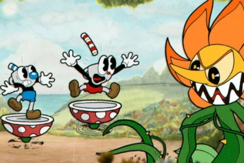
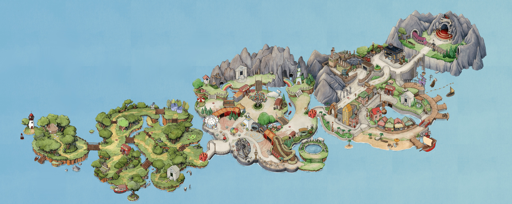

Introducción
Cuphead es un videojuego de plataformas independiente perteneciente al género de corre y dispara.
Es un día perfecto para una batalla estrepitosa
, dicen los personajes.
"Los hermanos no escucharon las advertencias y perdieron sus almas ante el Diablo."
Fuente: Libro de Arte de Cuphead
Detalles del Juego
Mundos principales:
- Inkwell Isle I
- Inkwell Isle II
- Inkwell Isle III
Pasos para la victoria:
- Obtén el contrato de alma.
- Visita a la tienda de Porkind.
- Derrota al jefe final.
Terminología básica:
- Soul Contract
- Lo que obtienes al derrotar a un jefe.
- Super Art
- Habilidad especial de gran poder.